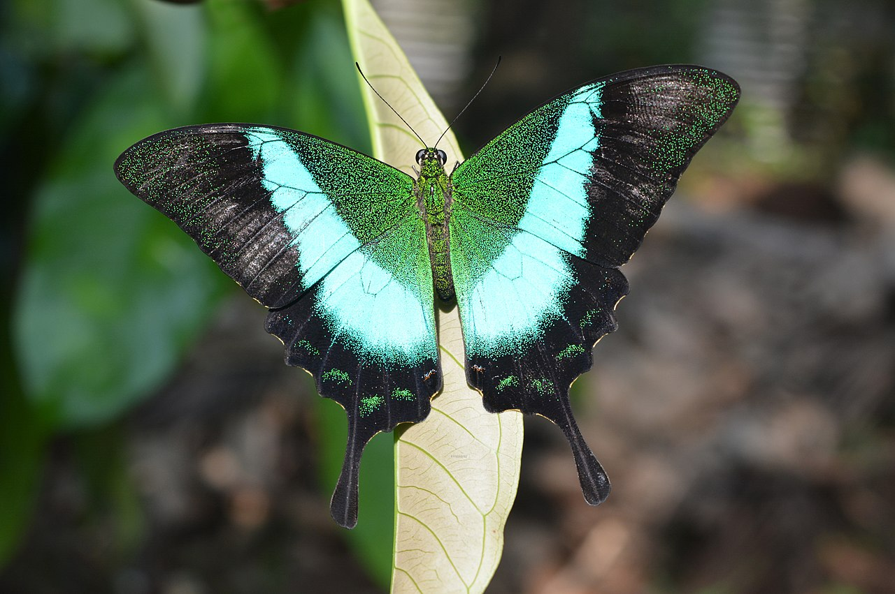

The Malabar Banded Peacock, scientifically known as Papilio buddha, is a strikingly beautiful butterfly native to the Western Ghats of India. This species is renowned for its vibrant coloration and distinct banded patterns on its wings, which display shades of iridescent blue and green. The Malabar Banded Peacock is an integral part of the rich biodiversity of the region and plays a crucial role in the ecosystem as a pollinator.
Bannerghatta National Park, located on the outskirts of Bengaluru, serves as a vital habitat for the Malabar Banded Peacock. Established in 1971, the park spans over 104.27 square kilometers and encompasses a diverse range of flora and fauna, including various butterfly species. The park's butterfly park, in particular, is a key attraction and a sanctuary for many native butterfly species, including the Malabar Banded Peacock.
The butterfly park within Bannerghatta National Park provides a controlled and conducive environment for butterflies to thrive. It includes a conservatory, a museum, and an audiovisual room to educate visitors about butterflies and their ecological importance. The conservatory is designed to mimic natural habitats, featuring a variety of host and nectar plants that support the lifecycle of butterflies, from caterpillar to adult. This setup not only aids in the conservation of butterflies like the Malabar Banded Peacock but also offers an opportunity for research and education.
The presence of the Malabar Banded Peacock in Bannerghatta National Park highlights the park’s role in preserving the biodiversity of the region. The butterfly’s dependency on specific host plants found in the Western Ghats ties its survival to the conservation of these habitats. Bannerghatta's efforts in maintaining a healthy ecosystem contribute to the protection of these delicate species and their natural environments.
Moreover, the Malabar Banded Peacock's striking appearance and ecological significance make it a symbol of the rich natural heritage of the Western Ghats. By showcasing this butterfly, Bannerghatta National Park emphasizes the importance of conservation and the need to protect the unique biodiversity of the region. Visitors to the park are not only treated to the visual delight of these butterflies but also gain an understanding of the intricate relationships within ecosystems and the importance of each species.
Older Version of PPC, dated 12.08.2022
| Date of Introduction | May 23, 1979 |
|---|---|
| Address | Sub Postmaster, |
| Bannerghatta SO, | |
| Bengaluru Urban (dt.), Karnataka - 560083. |